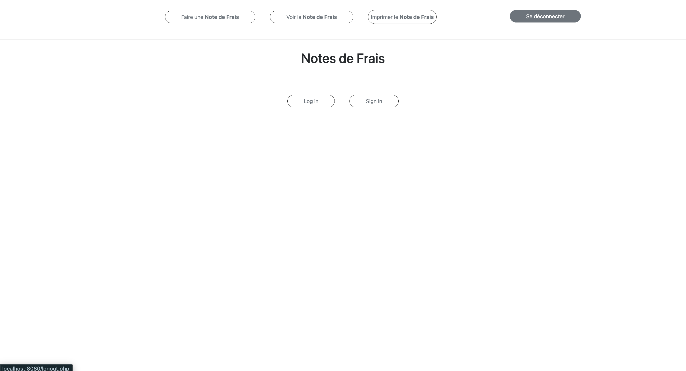
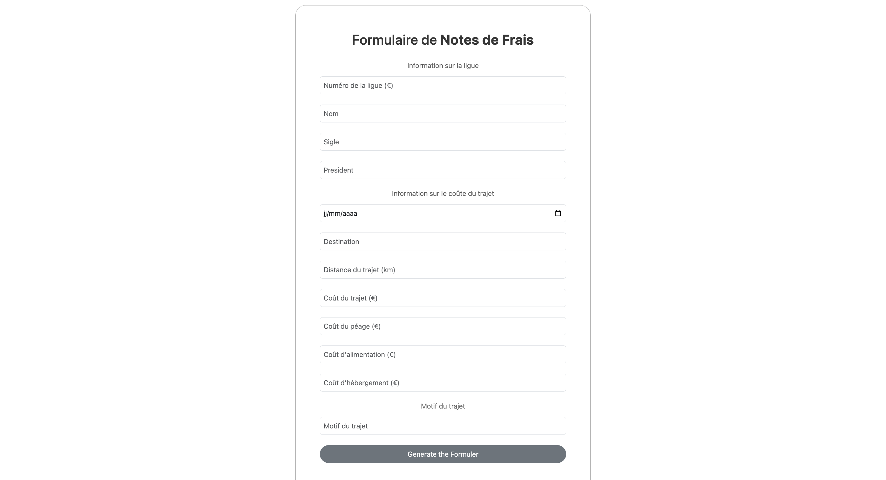
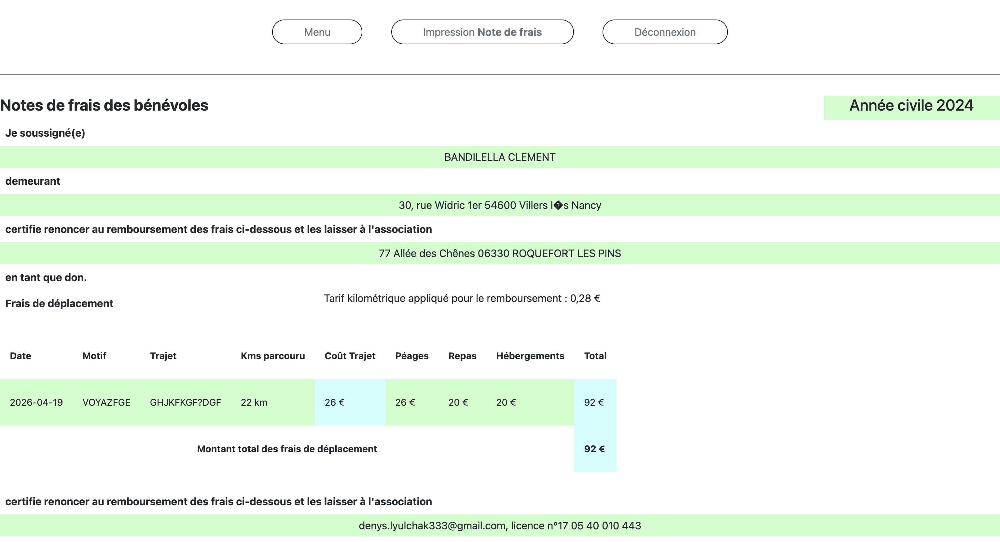
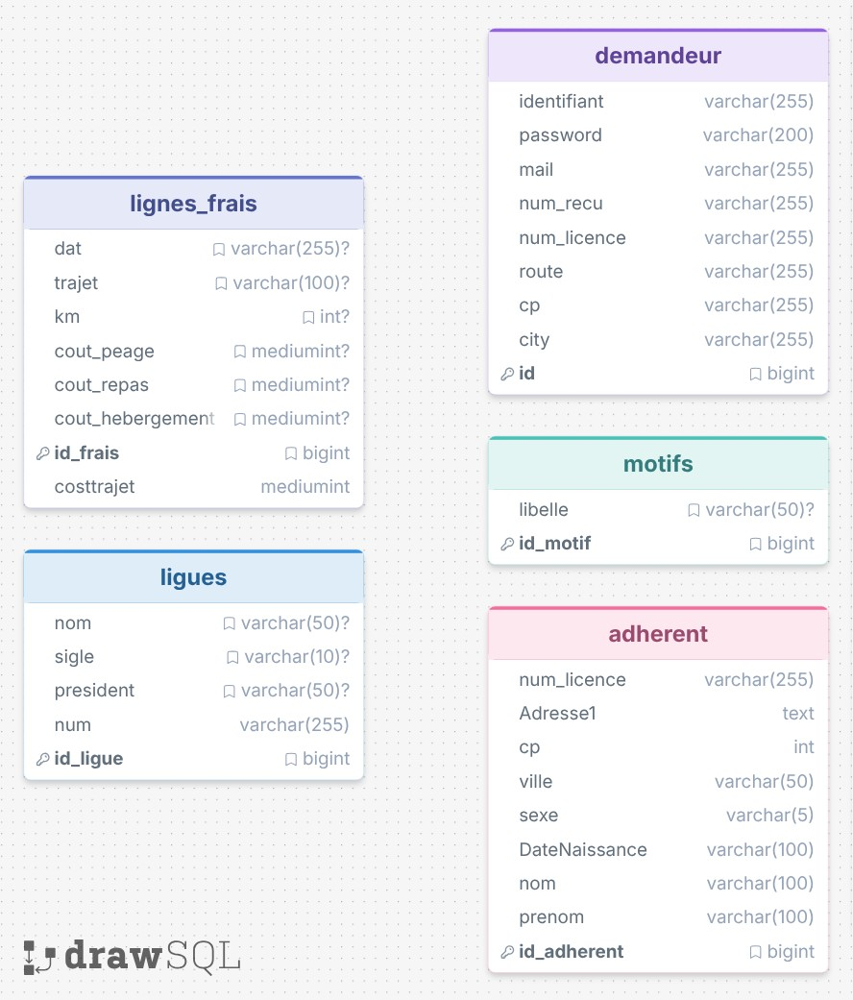

Note de Frais
Application web PHP de gestion des notes de frais professionnelles avec export PDF — Projet BTS SIO SLAM

Captures d'écran
Défilement automatique · Naviguez avec les flèches
Vue d'ensemble
Note de Frais est une application web développée en PHP procédural permettant aux employés de saisir, gérer et exporter leurs notes de frais professionnelles. L'application couvre l'ensemble du cycle de vie d'une note : création, suivi, modification et génération d'un document PDF formaté via la librairie dompdf.
Développé dans le cadre du BTS SIO SLAM, ce projet met en pratique la sécurisation d'une application web PHP, la manipulation de bases de données relationnelles et la génération dynamique de documents.
Backend PHP
Architecture procédurale · Sessions · Requêtes paramétrées
Export PDF
dompdf 1.2 · Document A4 professionnel · Impression HTML
Sécurité
password_hash · Prévention XSS · Injection SQL bloquée
Fonctionnalités principales
L'application offre un ensemble complet de fonctionnalités métier couvrant tout le processus de gestion des frais professionnels, de l'authentification à l'export du document final.
- Inscription et connexion sécurisée avec gestion de sessions PHP
- Saisie de frais : catégorie, date, description, montants HT / TTC, justificatif
- Historique des notes avec filtrage par date, catégorie et montant
- Export PDF dynamique via dompdf (document professionnel formaté A4)
- Modification et suppression de notes (restrictions selon statut)
- Validation des données côté serveur — prévention XSS et injection SQL
- Page d'impression HTML en format A4 sans dépendance externe
- Profil utilisateur avec modification de mot de passe sécurisée

Interface de navigation principaleFormulaire de saisie

Saisie d'une note — montants HT/TTC et catégorieLe formulaire de saisie est le cœur de l'application. Il guide l'utilisateur pour renseigner tous les champs nécessaires à la constitution d'une note de frais conforme aux pratiques comptables.
- Catégories prédéfinies : repas, transport, hébergement, matériel, autre
- Calcul automatique HT → TTC selon le taux de TVA sélectionné
- Date de dépense avec validation de format côté serveur
- Description libre pour le motif professionnel du frais
- Champ justificatif (référence)
- Validation complète côté serveur avant insertion en base
- Messages d'erreur contextuels sur chaque champ invalide
Export PDF via dompdf
L'export PDF est généré dynamiquement par la librairie dompdf 1.2. Le document produit est un récapitulatif professionnel format A4, listant l'ensemble des frais de la période sélectionnée avec les totaux HT et TTC.
- Génération à la demande depuis l'historique — filtrage par période
- En-tête avec nom de l'utilisateur, date de génération et période couverte
- Tableau récapitulatif : date, catégorie, description, HT, TVA, TTC
- Ligne de totaux automatiques (somme HT et somme TTC)
- Mise en page A4 respectant les marges et polices professionnelles
- Alternative impression HTML directe sans librairie externe

Document PDF généré — récapitulatif A4 formatéArchitecture
L'application suit une architecture PHP procédurale avec une séparation
nette entre les scripts de traitement (actions/) et les pages de présentation.
Chaque requête HTTP transite par un point d'entrée qui vérifie la session avant d'accéder
aux données.
- Séparation traitement / présentation — principe DRY appliqué
- Sessions PHP sécurisées avec vérification systématique à chaque page
- Requêtes PDO paramétrées — protection totale contre les injections SQL
- Mots de passe hachés avec
password_hash()/ vérifiés avecpassword_verify()
Modèle Physique de Données
La base de données a été conçue avec la méthode Merise (MCD → MLD → MPD). Le MPD définit l'ensemble des tables, clés primaires, clés étrangères et contraintes d'intégrité nécessaires à la gestion des notes de frais.
- Table
utilisateur— identifiant, nom, email, mot de passe haché, rôle - Table
note_de_frais— date, catégorie, description, montant HT, TVA, TTC, statut - Table
categorie— libellés normalisés (repas, transport, hébergement…) - Clé étrangère
note_de_frais.id_utilisateuravec contrainteCASCADE - Contraintes
NOT NULLetCHECKsur les montants - Respect de la 3NF — pas de redondance, dépendances fonctionnelles directes

MPD — modélisation Merise de la base de donnéesSécurité
Sessions PHP
Authentification par sessions côté serveur. Chaque page vérifie la session active avant tout traitement.
Hachage mots de passe
password_hash() avec bcrypt. Jamais de mot de passe en clair en base de données.
Requêtes paramétrées
Toutes les requêtes SQL utilisent PDO avec des paramètres liés — injection SQL impossible.
Prévention XSS
Échappement systématique des sorties avec htmlspecialchars() avant affichage.
Validation serveur
Chaque champ est validé côté serveur — type, longueur, format — indépendamment du client.
Contrôle d'accès
Un utilisateur ne peut accéder, modifier ou supprimer que ses propres notes de frais.
Technologies utilisées
| Composant | Technologie | Version |
|---|---|---|
| Langage backend | PHP | 7.4+ / 8.0+ |
| Base de données | MySQL | 5.7+ / 8.0+ |
| Accès données | PDO (PHP Data Objects) | — |
| Modélisation BD | Merise (MCD → MPD) | — |
| Serveur web | Apache | 2.4+ |
| Frontend | HTML5, CSS3 | — |
| Génération PDF | dompdf | 1.2+ |
| Hachage | bcrypt via password_hash() | — |
| Versionning | Git | — |
Compétences mobilisées
- Développer une application web dynamique avec PHP procédural
- Implémenter un système d'authentification sécurisé par sessions
- Concevoir une base de données relationnelle avec la méthode Merise (MCD→MPD)
- Concevoir et manipuler une base de données relationnelle MySQL
- Sécuriser les accès aux données avec PDO et requêtes paramétrées
- Appliquer les bonnes pratiques de sécurité web (XSS, injection SQL, hachage)
- Générer des documents PDF dynamiques avec dompdf
- Concevoir des formulaires avec validation côté serveur
- Utiliser Git pour le versioning du projet